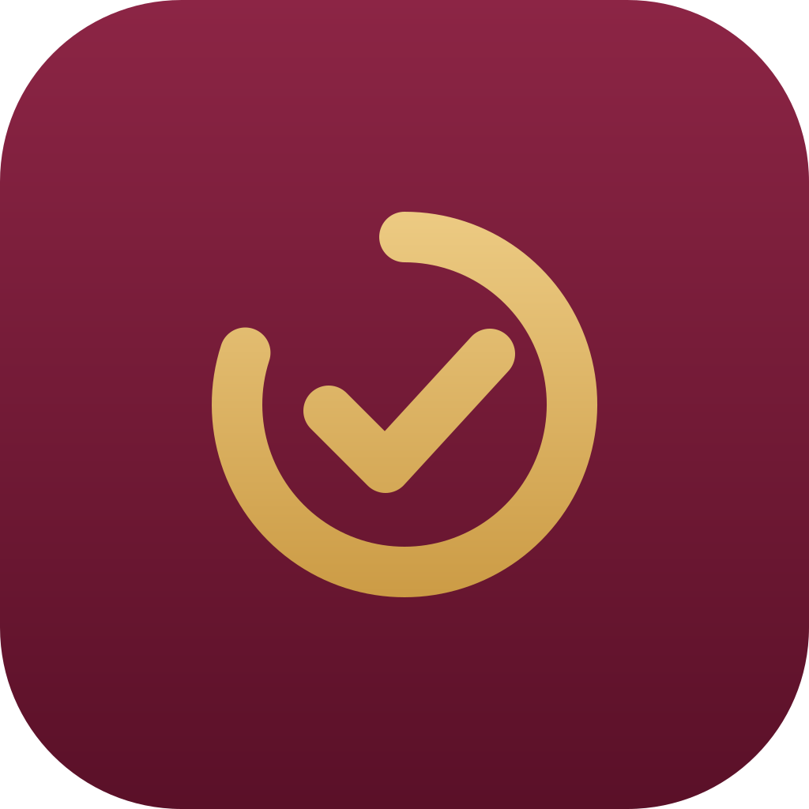
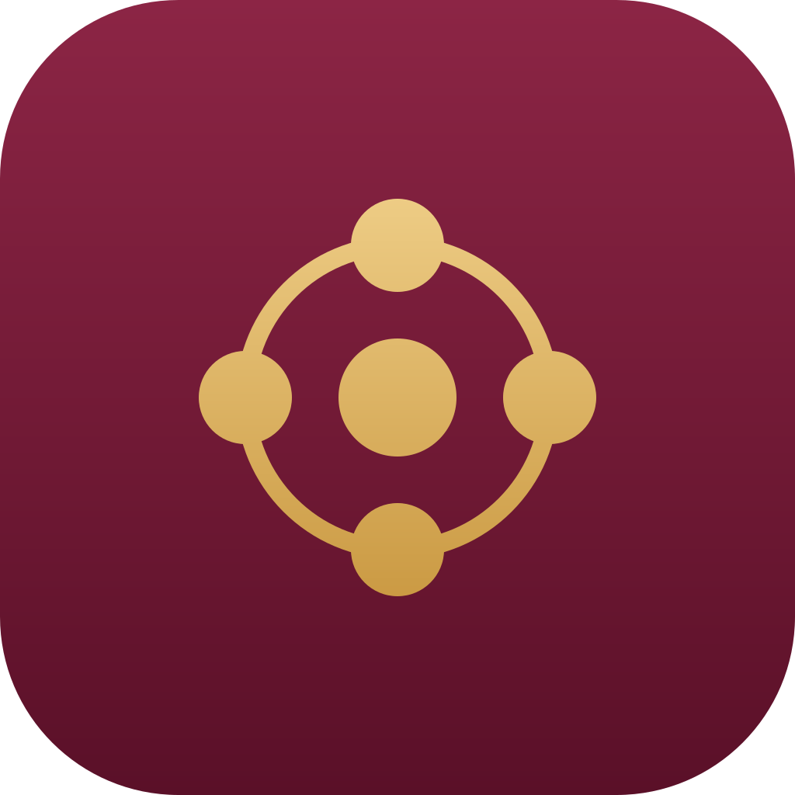
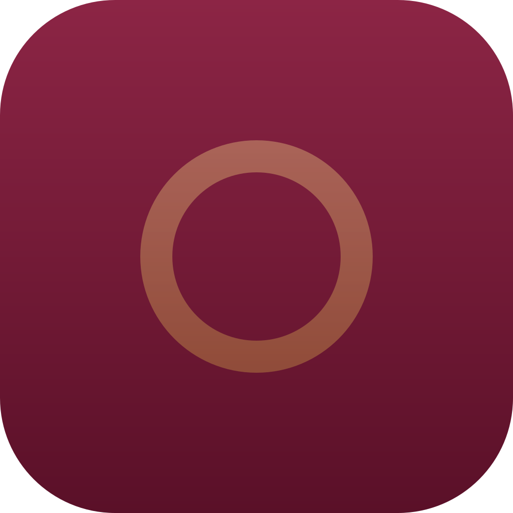

Neue Ideen
- Die Teamleitung entwickelt mit ihrem Team Ideen, wie die Abteilung besser wird.
- Die Teamleiter-Runde stimmt sie über Abteilungsgrenzen ab.
- Marco entscheidet.
- Das Team setzt um und hält fest, was es gelernt hat.
Hier siehst du, wer bei uns was macht, wer an wen berichtet und wer zuletzt etwas dazugelernt hat. Tippe auf ein Teammitglied, um seinen Steckbrief zu öffnen. Neue Teammitglieder und neue Lektionen erscheinen hier automatisch.
Noch keine Ideen eingebracht.
Alle Apps des Studios folgen einer Designsprache: Apple-Klarheit in Familienfarben. Bordeaux und Gold kommen aus dem Familienwappen, die klare Form, die Systemschrift und die Bedienung kommen von Apple. Verantwortlich ist Gestaltungs-Greta, die Icons zeichnet Logo-Luisa.



| iPhone | iPad | Desktop | |
|---|---|---|---|
| Navigation | Tab-Leiste unten, höchstens 5 Tabs | Seitenleiste oder Pille oben | Seitenleiste links |
| Titel | Groß, schrumpft beim Scrollen | Groß | Mittel |
| Eingabe | Sheet von unten mit Zahlenblock | Sheet oder Popover | Dialog oder direkt in der Tabelle |
| Dichte | Apple-Größen | Apple-Größen, zweispaltig | Kompakt |
| Verwenden | Nicht verwenden |
|---|---|
| Plan | Budget, Haushaltsplan |
| Zuweisen | Budgetieren, Einplanen |
| Noch zu verteilen | Zuweisbar, Ready to Assign |
| Konto / Konten | Account, Bargeld |
| Kontostand | Saldo |
| Buchung | Transaktion, Umsatz |
| Ausgabe / Einnahme | Outflow, Inflow, Zufluss |
| Empfänger | Zahlungsempfänger, Payee |
| Ohne Kategorie | Unkategorisiert |
| Gebucht ✓ | Abgeglichen, Cleared |
| Kontostand korrigieren | Kontoabgleich |
| Aufteilen | Split |
| Ziel · Fehlt noch · Gedeckt | Target · Unterfinanziert · Finanziert |
| Überzogen | Overspent |
| Serie | Streak |
| Zählerstand ablesen · Verbrauch | Reading · Delta |
| Analyse | Reflect, Berichte |
| du | Sie |
Alle Werte, Bausteine und Icon-Dateien stehen im Designsystem des Studios.